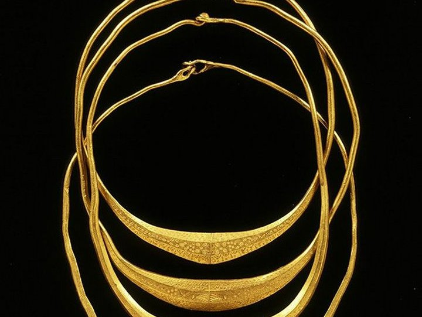
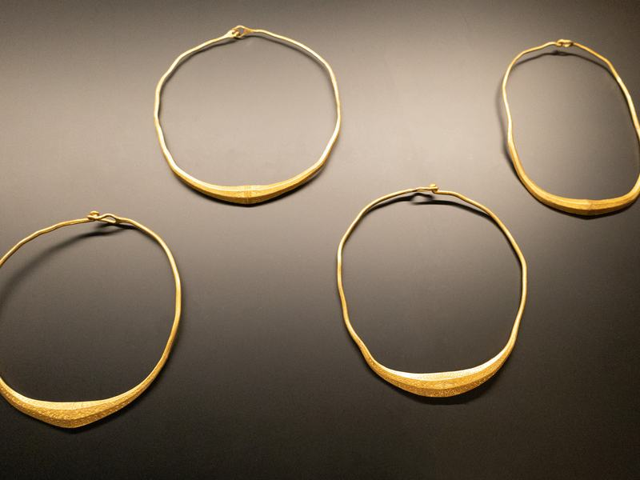
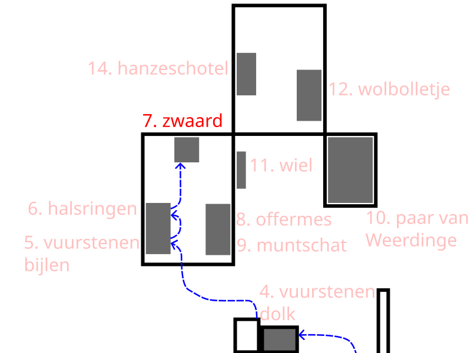

6. Vier goldene Halsringe aus Olst (spätrömische Zeit, ca. 400 n. Chr.)



Hier siehst du vier goldene Halsringe aus der spätrömischen Zeit, die 1952 bei Olst in der IJssel gefunden wurden. Sie stammen aus der Zeit um 400 n. Chr. Es ist bemerkenswert, dass solch kostbarer Schmuck hier gefunden wurde, denn Overijssel lag damals außerhalb des Römischen Reiches. Dennoch gab es Kontakte zur römischen Welt, durch Handel und durch Männer, die im römischen Heer dienten.
Die Ringe wurden aus eingeschmolzenen römischen Goldmünzen hergestellt. Sie sind schwer, glänzend und mit kleinen Punkten und Kreisen verziert. Solcher Schmuck galt als Zeichen von Reichtum und Macht. Er gehörte wahrscheinlich jemandem von hohem Ansehen, vielleicht einem Anführer oder einer bedeutenden Persönlichkeit.
Warum sie im Fluss landeten, wissen wir nicht genau. Vielleicht handelte es sich um wertvolle Besitztümer, die jemand schützen wollte. Vielleicht wurden sie in unsicheren Zeiten versteckt. Um 400 n. Chr. schwand die römische Macht in diesen Gebieten und die Lage wurde unruhiger. Es könnte aber auch sein, dass sie bewusst im Fluss geopfert wurden.
Der nächste Hörpunkt ist das Schwert von Ommerschans.